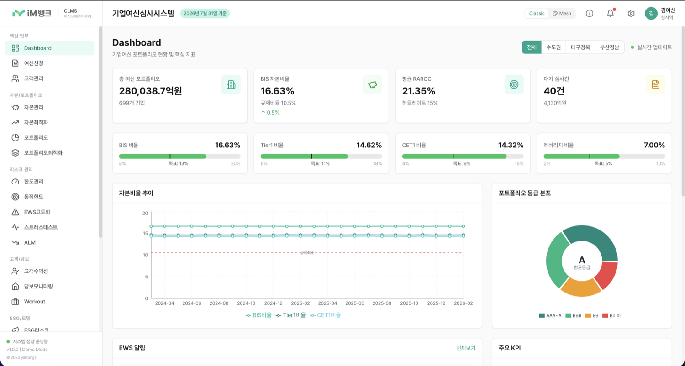
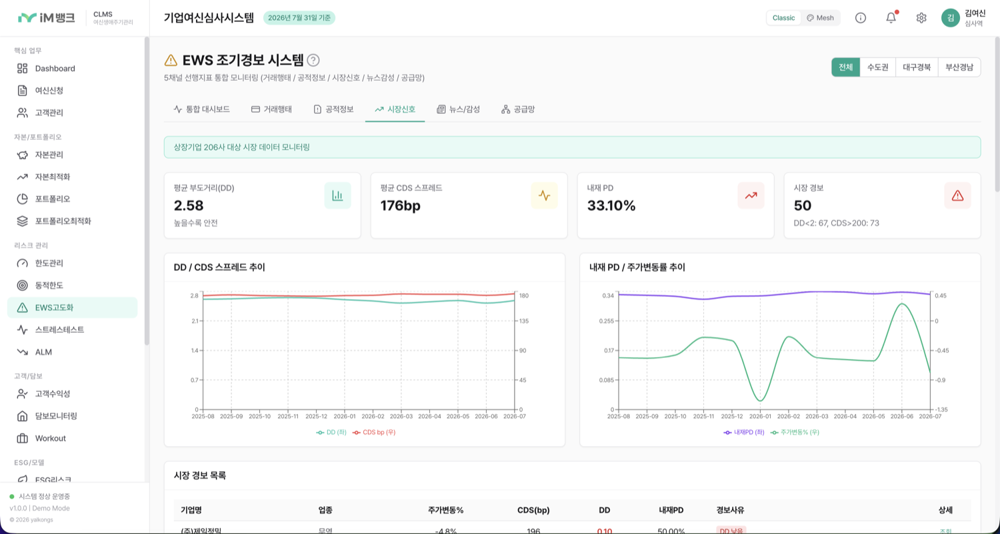
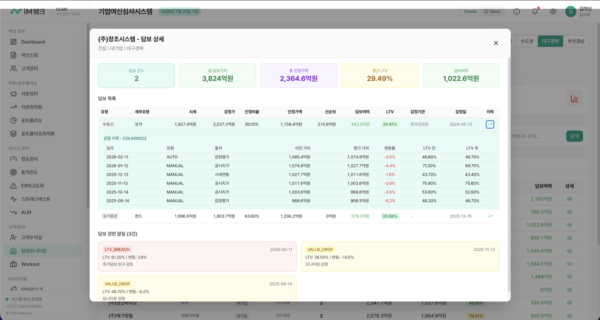

기준금리 · FTP · 신용스프레드(EL+UL) · 경비율 · 목표마진을 구성요소별로 분해해 산출하고 산업전략·담보 가감을 자동 반영한다. 허들레이트 대비 RAROC을 즉시 판정해 수익성 미달 여신을 승인 전에 걸러낸다.

재무 · 거래행태 · 공급망 · 공시/등기 · 뉴스감성 · 시장신호를 상시 스코어링해 종합점수로 통합한다. 부도거리·CDS·내재PD까지 읽어 연체 이전에 부실 징후를 선행 포착한다.

담보별 감정평가 이력을 시계열로 축적하고 부동산가격지수에 연동해 자동 재평가한다. LTV 임계 초과·담보가치 급락 시 경보를 자동 생성해 보강 요구 시점을 놓치지 않는다.
| 영역 | 현행 | CLMS 적용 후 |
|---|---|---|
| 여신관리 효율 | 재무분석·등급·금리를 담당자가 개별 산출 | 재무제표 입력 → 등급·PD/LGD·금리·RAROC 일괄 자동 산출, 심사 리드타임 단축 |
| 건전성 관리 | 분기 점검 중심, 연체 후 대응 | 상시 경보로 부실 선행 인지, 워크아웃·회수까지 동일 화면에서 추적 |
| 담보 관리 | 개별 대장, 수기 재평가 | 지수연동 자동 재평가 + LTV 임계 경보, 담보 이력 전 구간 조회 |
| 충당금·규제 | 기말 일괄 분류 및 산정 | 자산건전성 분류·ECL 상시 자동 산정(각 14,400건), 감독규정 기준 내장 |
| 자본 효율 | 포트폴리오 수익성 미측정 | RWA·RAROC 기반 포트폴리오 최적화·한도 동적조정, 자본배분 근거 확보 |
현재 CLMS의 EWS는 지표 기반 종합점수 방식이다. 여기에 대량 데이터로 학습한 부도예측 모델을 결합해 규칙 기반 스코어링을 학습 기반 예측으로 전환한다. 타깃 누수 제거 · 재현성 검증 · 학습/서빙 정합성 확보까지 완료했으며, 행내 실데이터를 연결하면 기간별 재보정과 순위 기반 알림 정책으로 확장해 현업이 실제로 처리 가능한 분량의 정밀 경보를 제공한다.